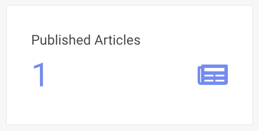
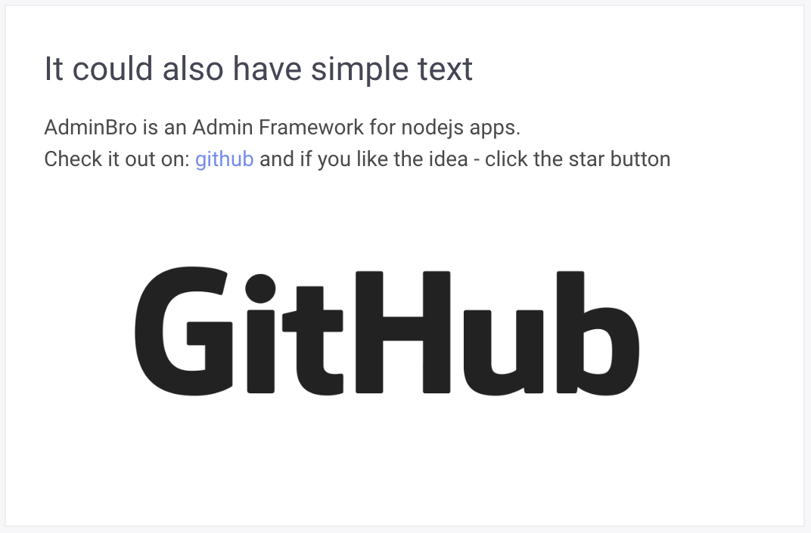
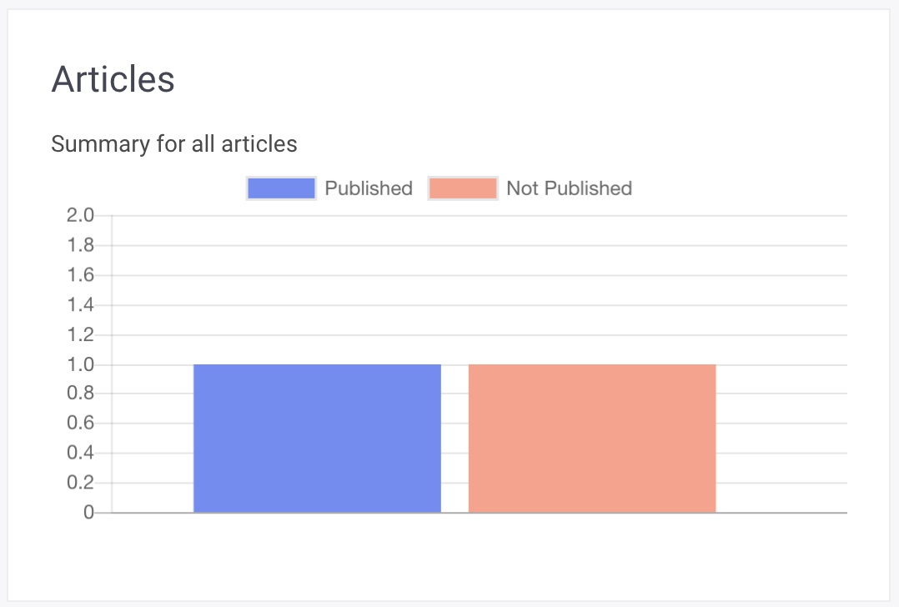
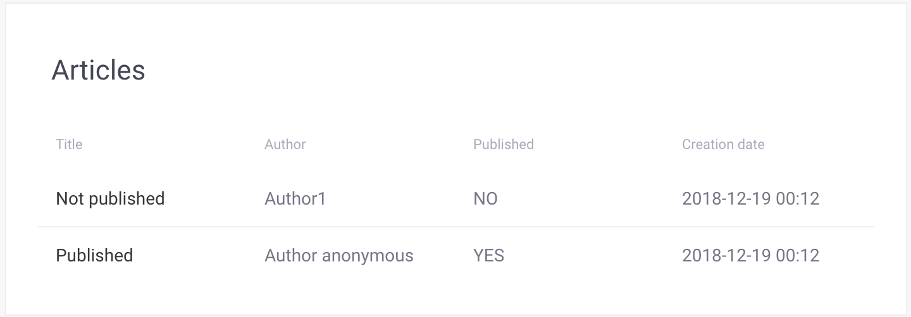

By default AdminBro comes with the simple dashboard. You can easily modify it by adding some widgets.
how to change default dashboard
You can pass your own dashboard class to the AdminBro via options
const DashboardPage = require('./dashboard-page')
const adminBroOptions = {
...
databases: [...],
resources: [...],
dashboard: DashboardPage,
rootPath: '/admin'
...
}
DashboardPage has to be a subclass of AdminBro.PageBuilder, and should implement build method:
const { PageBuilder } = require('admin-bro')
class DashboardPage extends PageBuilder {
constructor(props) {
super(props)
this.title = 'Custom dashboard'
this.subtitle = 'This is just an example what can be done using AdminBro'
}
async build() {
this.addBlock({
title: 'Published Articles',
value: this.articlesCount.published,
icon: 'fas fa-newspaper fa-2x',
columns: 3,
})
}
}
module.exports = DashboardPageIn the example above we are adding just one simple widget which will have width of 3 columns (in 12 columns grid).
Available widgets methods
#addBlock({ columns, offset, title, icon, value }, color)

this.addBlock({
title: 'Published Articles',
value: 1,
icon: 'fas fa-newspaper fa-2x',
columns: 3,
})#addTextBox({ title, content, columns, offset })

this.infoText = [
'AdminBro is an Admin Framework for nodejs apps.',
'Check it out on: <a href="https://github.com/SoftwareBrothers/admin-bro">github</a> and if you like the idea - click the star button',
'<a href="https://github.com/SoftwareBrothers/admin-bro"><img style="margin: 60px; text-align: center; width: 70%"src="https://github.githubassets.com/images/modules/logos_page/GitHub-Logo.png"></a>'
]
this.addTextBox({
title: 'It could also have simple text',
content: this.infoText.map(row => `<p>${row}</p>`).join(''),
columns: 6
})#addChart({ title, subtitle, columns, offset, config })
Method which shows https://www.chartjs.org/ charts.

this.addChart({
columns: 6,
title: 'Articles',
subtitle: 'Summary for all articles',
config: {
type: 'bar',
data: {
datasets: [
{
label: 'Published',
fill: true,
backgroundColor: PageBuilder.COLOR.INFO,
data: [1]
}, {
label: 'Not Published',
fill: true,
backgroundColor: PageBuilder.COLOR.WARNING,
data: [1]
},
],
},
}
})#addInfoList({ items, columns, offset, title, subtitle })

this.addInfoList({
title: 'Recent comments',
subtitle: 'Latest comments from user all around the world',
columns: 4,
items: (await CommentModel.find({}).limit(3).sort({createdAt: 'desc'})).map(comment => ({
title: comment.content,
subtitle: comment.createdBy,
date: moment(comment.createdAt).format('YYYY-MM-DD HH:MM'),
status: comment.flagged && 'flagged',
imgSrc: 'http://www.question2answer.org/qa/?qa=image&qa_blobid=18247718293145324634&qa_size=40',
}))
})#addInfoTable({ title, columns, items, offset, headers })

this.addInfoTable({
title: 'Articles',
headers: ['Title', 'Author', 'Published', 'Creation date'],
items: (await ArticleModel.find({}).sort({createdAt: 'desc'}).limit(5)).map(article => ([
article.title,
article.author,
article.published ? 'YES' : 'NO',
moment(article.createdAt).format('YYYY-MM-DD HH:MM'),
])),
columns: 8,
})